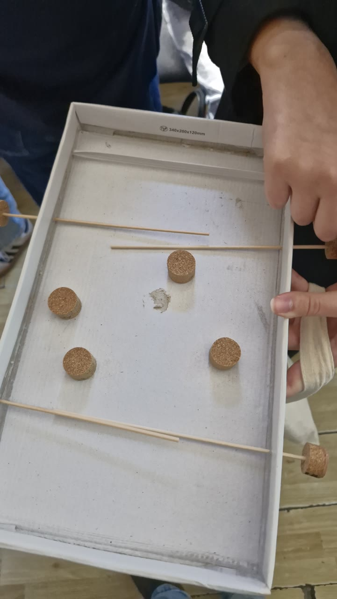
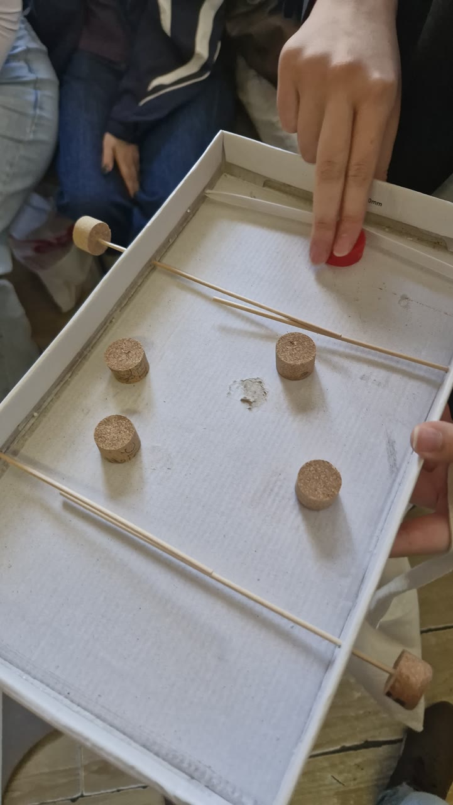
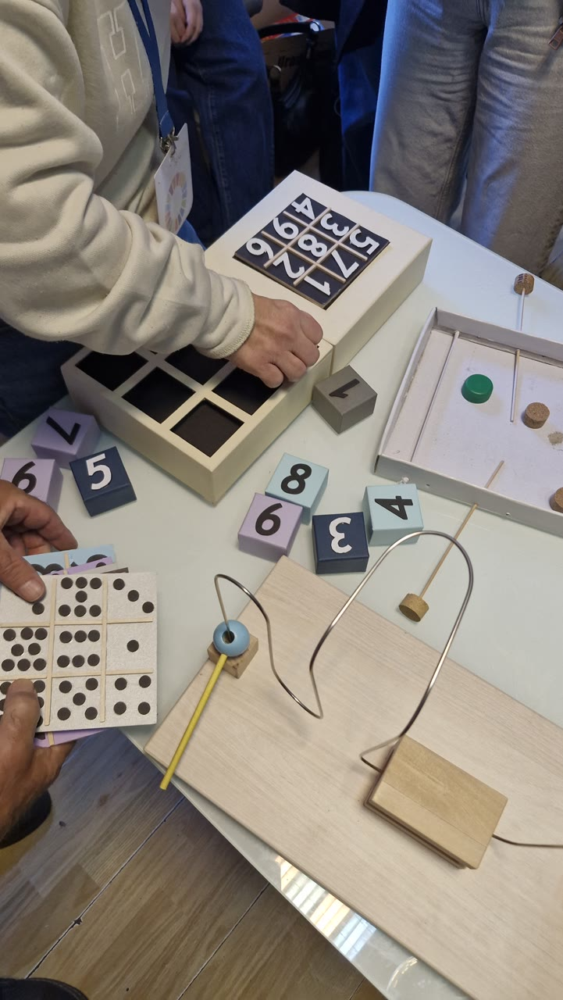
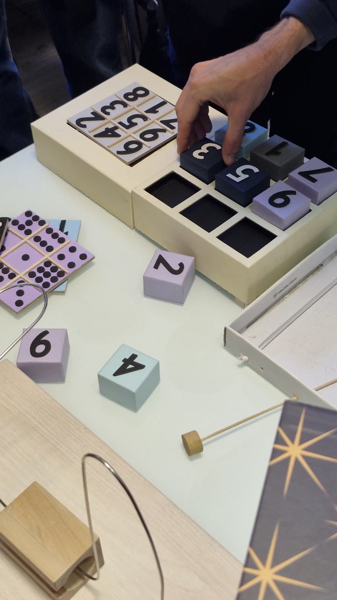

Radovi i primeri / Čas 3
fliper
Iva Mijanović28/24
Čas 3
3 prikaza rada · Gradivo časa


U rukama korisnika · 23.10.2026.
4 kadrova sa posete udruženju · cela poseta ↗
U udruženje je donet raniji rad, ne onaj sa ovog časa
ViđenoPod istim imenom registar vodi dva predmeta: plitku kutiju sa plutanim diskovima i štapićima kao vođicama (treća nedelja) i kutiju sa izrezanim žlebom i zelenim pomponom (četvrta nedelja). U svim kadrovima posete vidi se kutija iz treće nedelje; kutija sa žlebom se ne pojavljuje nijednom. U kadrovima 01 i 02 kutija se drži u vazduhu — za igru sa okidanjem to znači da nagib menja putanju pre nego što disk krene. Plutani čepovi nabijeni na krajeve štapića spolja su dobra popravka: vođica postaje podesiva, a vrh štapića tup.
Sledeća probaSpustiti kutiju na sto i snimiti ceo potez jednim kadrom. Zabeležiti da li disk izleti iz kutije i da li zidovi dovoljno zadržavaju.








Ista ruka, ostale nedelje
- fliper nedelja 4 · 3 slika